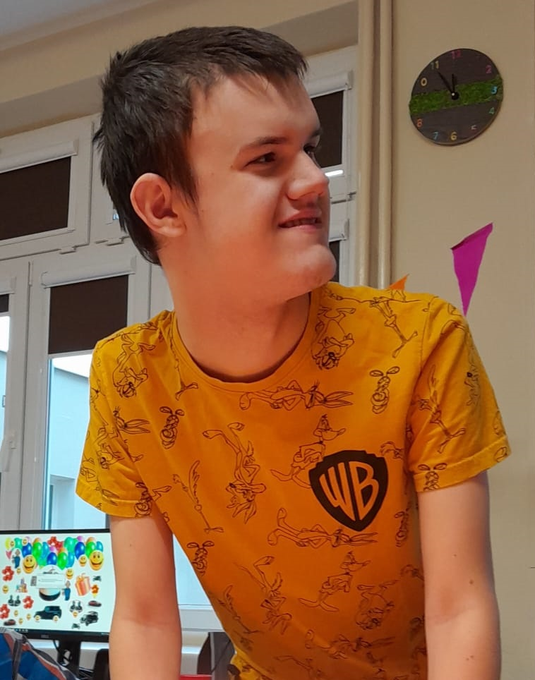

KRS: 0001060434
Przekaż swoje 1,5% podatku
JAK NAS WSPIERAĆ?

Zostań wolontariuszem i dołącz do naszej fundacji!
WOLONTARIAT RODZINNY

Franek ma problemy z chodzeniem i wymaga cały czas monitorowania przez
rehabilitantów i ortopedów, z uwagi na brak stabilizacji w obrębie pasa.
Wymaga to ciągłej rehabilitacji.
Franek pokochał pływanie, a dzięki Joanna Bielak z JB Sport i jej treningom, Franek pływa w basenie o głębokości ponad 2,3 m .
Tak więc naszym marzeniem, poza opłacaniem mu lekcji, jest sprawienie mu specjalnych korekcyjnych okularów do pływania:)
Wymaga to ciągłej rehabilitacji.
Franek pokochał pływanie, a dzięki Joanna Bielak z JB Sport i jej treningom, Franek pływa w basenie o głębokości ponad 2,3 m .
Tak więc naszym marzeniem, poza opłacaniem mu lekcji, jest sprawienie mu specjalnych korekcyjnych okularów do pływania:)
O FRANKU
NASI SPONSORZY